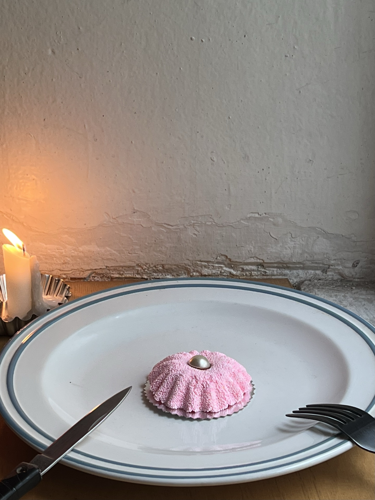
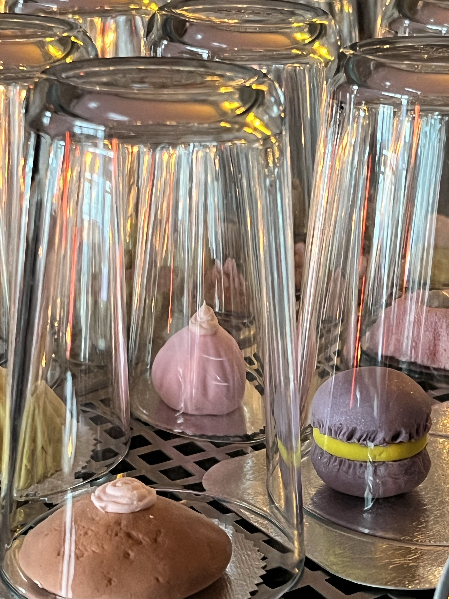
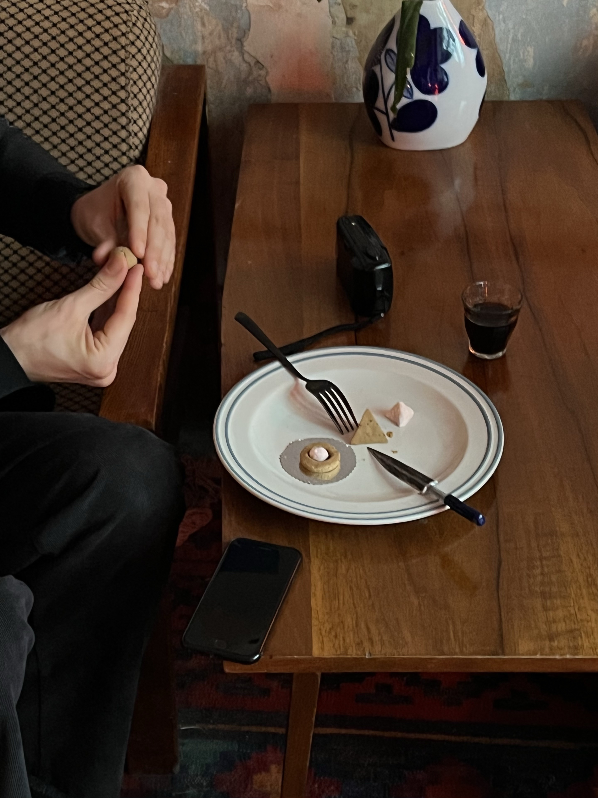
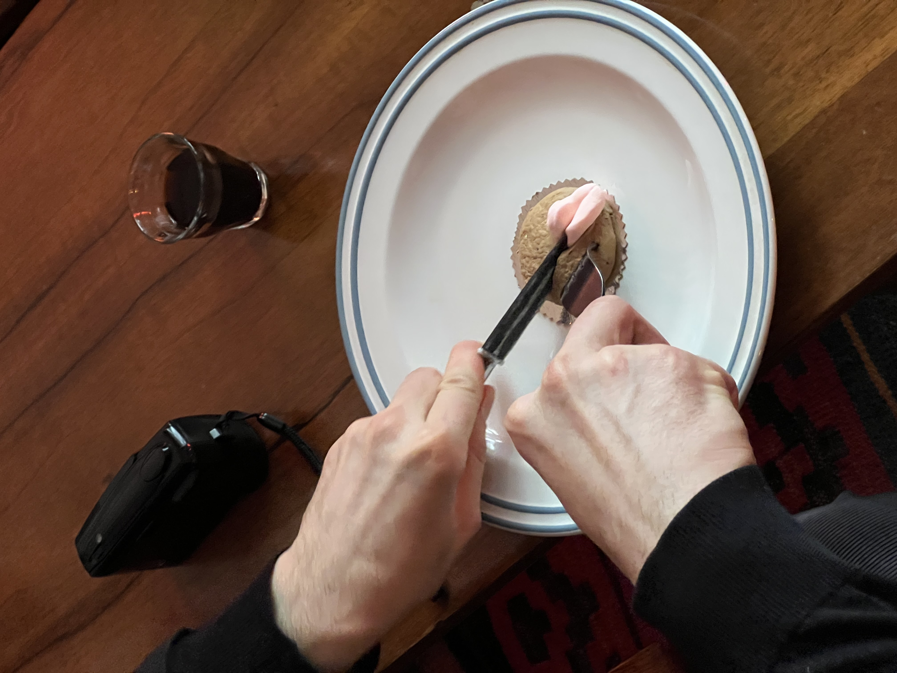
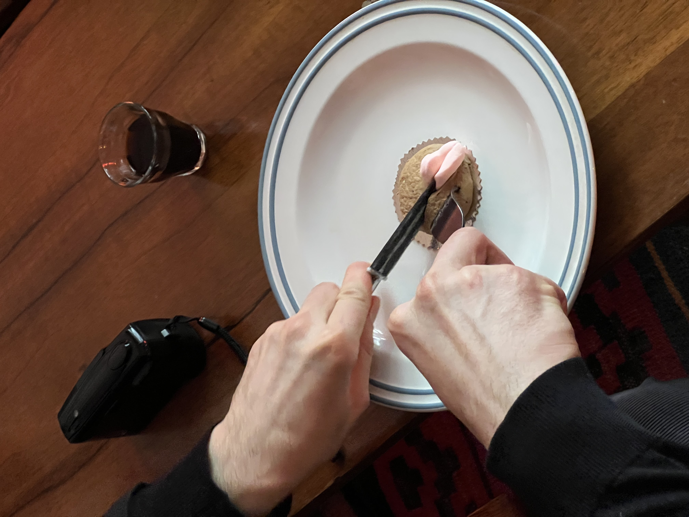
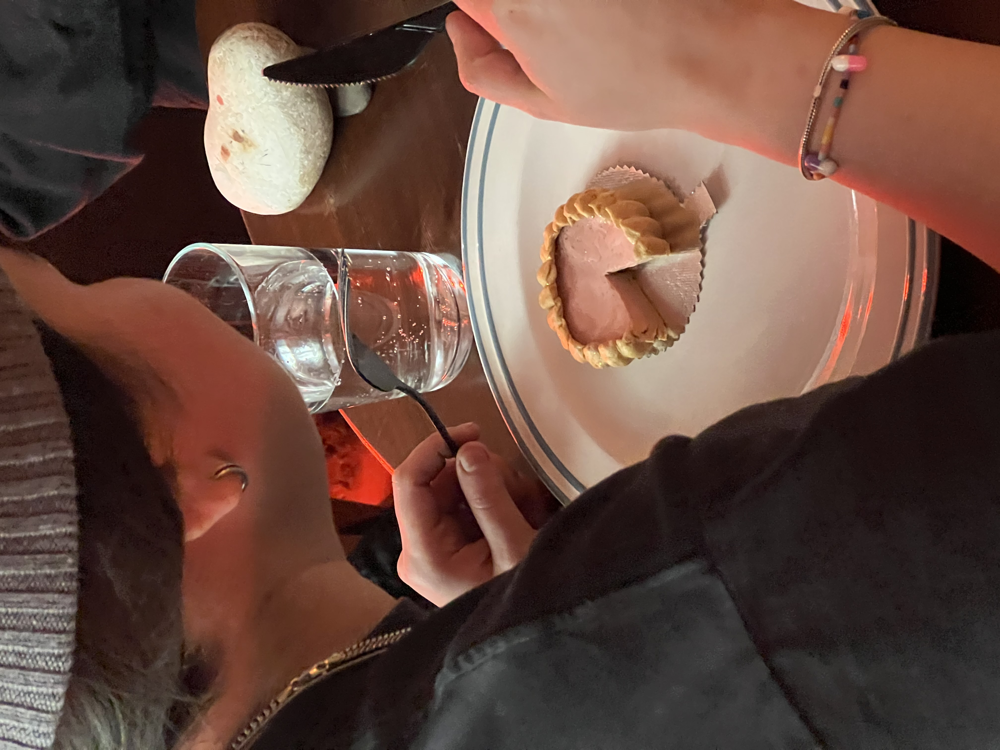
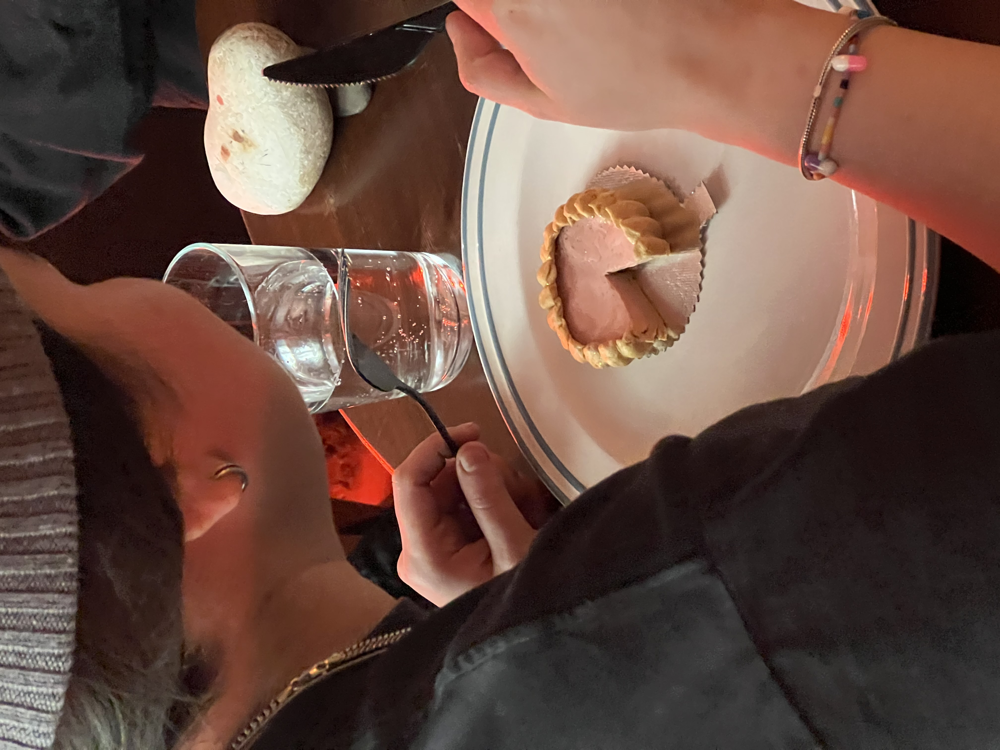
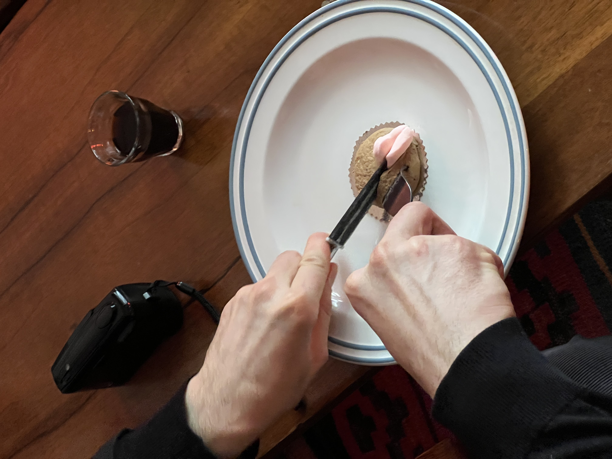
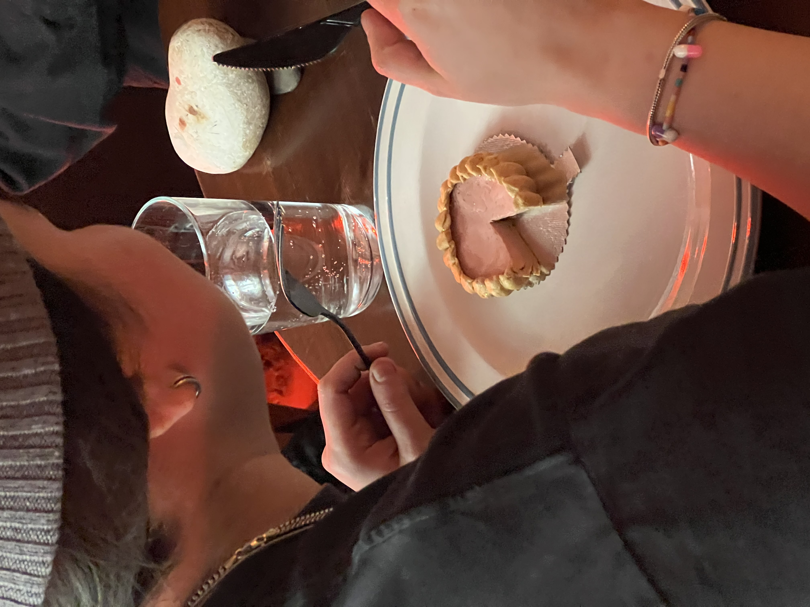

collection of inedible desserts, moscow, 2020
This collection of inedible desserts was created to keep the tradition of coffee shops where drinking coffee with sugar or dessert is considered disrespectful to the product, as it obscures its natural sweetness. To remain a part of this tradition, but still serve desserts, the artist decided to create inedible desserts, realistically made of colored molding dough with texture very pleasant to the touch, but not suitable for eating. The dessert was served on a plate with a fork and knife. Each dessert had one of three flavors (cedar, lime, spruce) chosen by the artist to pair with the coffee. In this way, this collection of inedible desserts may represent a new way of perceiving food and provoke a deeper emotional experience for the guests. The collection featured 21 desserts.



 

 


